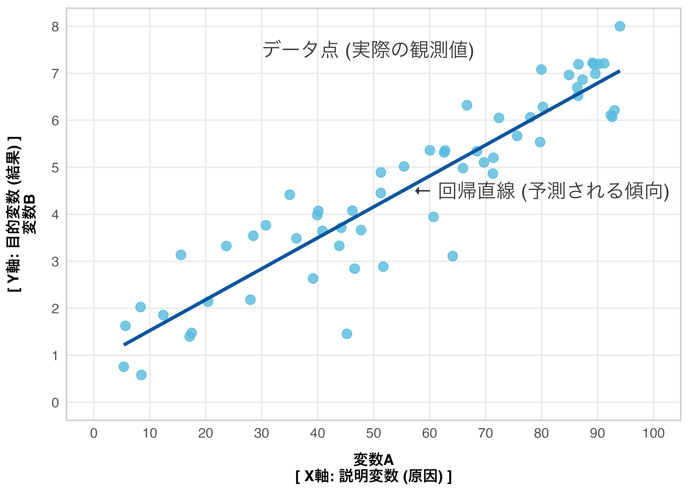
10 回帰分析1
単回帰分析・重回帰分析
今日の目標
- 単回帰分析の考え方と R での実行方法を理解する。
- 重回帰分析で複数の説明変数を扱えるようになる。
- 回帰結果を複数のパッケージで表示・比較できるようになる。
- 回帰係数の解釈ができるようになる。
10.1 回帰分析とは
回帰分析とは、結果となる数値（Y）と、それに影響を与える要因（X）の関係性を数式で表し、要因の影響度の評価や未来の予測を行う統計手法です。
概念
数式
イメージ図
推定
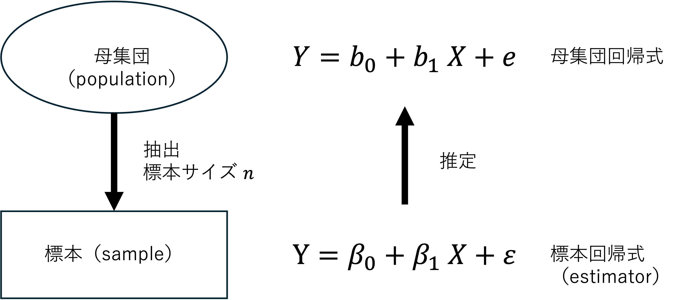
誤差
母集団から取得した標本は毎回違うと考えられるので、標本回帰式も毎回異なります。つまり、標本回帰式から母集団回帰式を推定する際には、誤差が生じます。
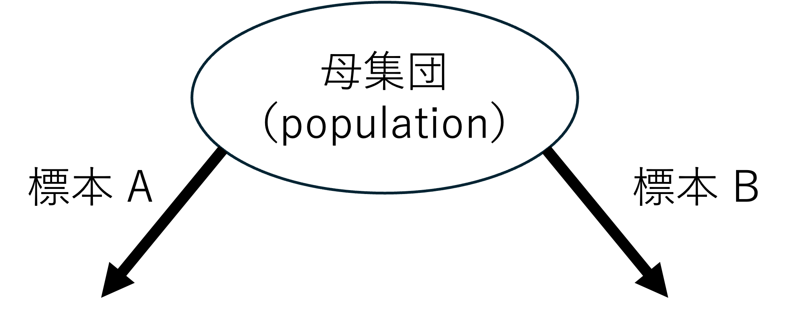
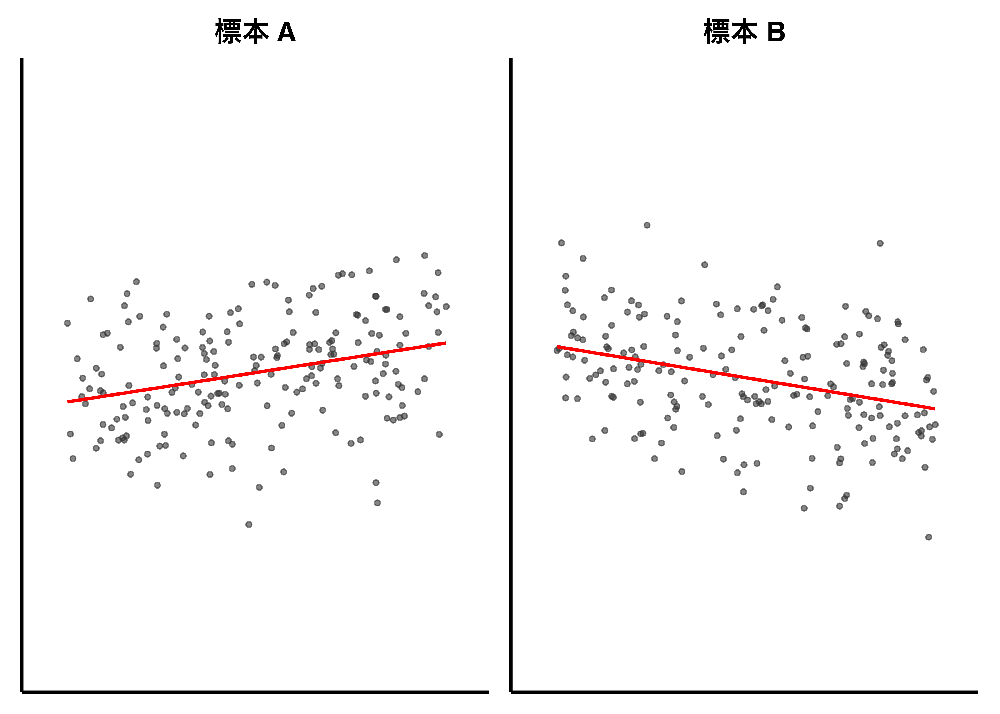
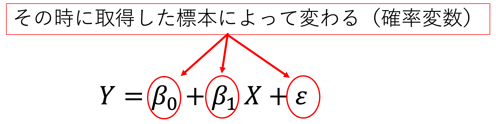
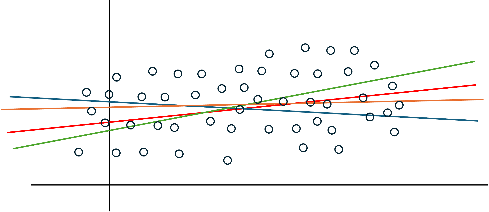
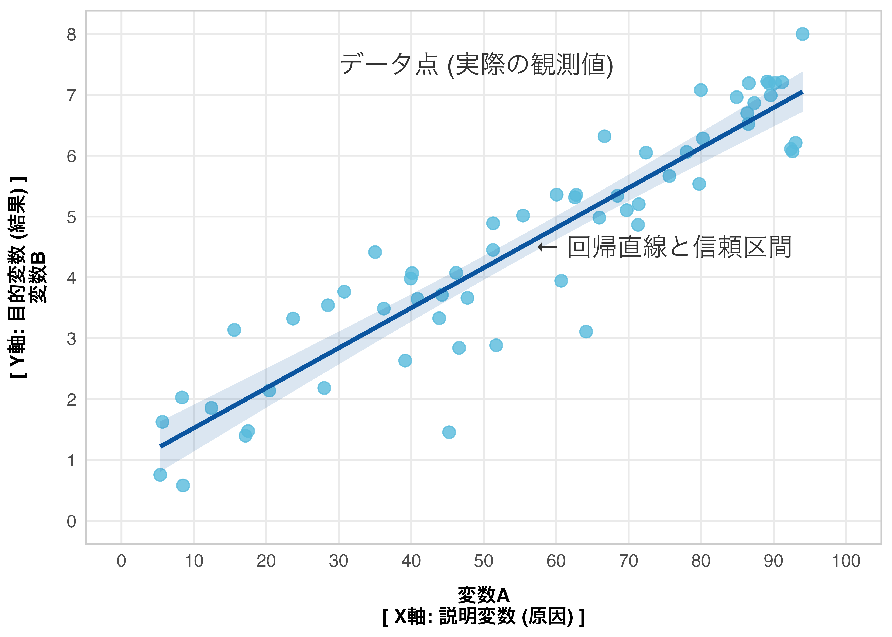
X（説明変数）の効果
回帰分析は、X(説明変数・原因)がY（目的変数・結果）に関連しているか（影響を及ぼすか）検証しています。ここで、回帰直線がX軸と並行の場合、X は Y と関連していない（影響を及びさない）といえます。つまり、回帰分析では、X の係数（\(\beta_1\)）が 0 となるかどうか（直線が横一直線となるかどうか）の判断が必要です。
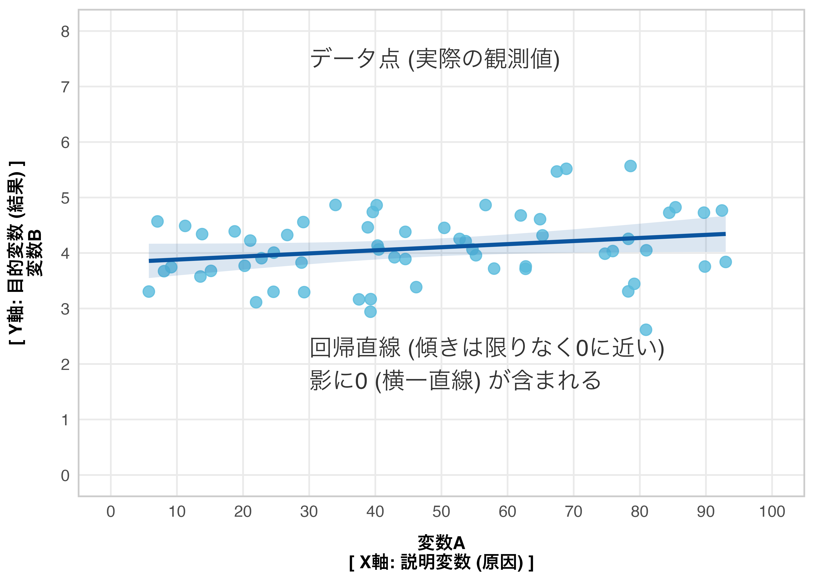
上記のように実際に X の係数（\(\beta_1\)）が完全に0になることはほとんどありませんが、誤差（影）の範囲に0が含まれることがあります。この場合、母集団では、X の係数（\(\beta_1\)）が0になり得ることを意味ます。つまり、母集団では、X は Y に関係していない（影響を与えていない）ことを示唆しています。
P値
母集団において係数（\(\beta_1\)）が、0になる確率を表すのがP値です。
例：以下は、エクセルで回帰分析を行った時の分析結果です。
\[ \text{SNSの満足度100点満点} = \beta_0 + \beta_1 \text{女性} + \beta_2 \text{社宅} + \beta_3 \text{マンション} + \beta_4 \text{賃貸} + \beta_5 \text{郊外} + \beta_6 \text{地方} + e \]
\[ \text{SNSの満足度100点満点} = 73.2 + 1.75 \text{女性} - 3.42 \text{社宅} - 3.39 \text{マンション} - 8.45 \text{賃貸} - 4.08 \text{郊外} - 5.74 \text{地方} + e \]
\[ \text{SNSの満足度100点満点} = 73.2 + 1.75 \text{女性} - 3.42 \text{社宅} \color{green}{- 3.39 \text{マンション}} \color{red}{- 8.45 \text{賃貸}} \color{blue}{- 4.08 \text{郊外}} \color{magenta}{- 5.74 \text{地方}} \color{black}{+ e} \]
決定係数（\(R^2\)）
分析の精度（直線の当てはまりの良さ）を表す指標です。
決定係数の定義は \(\text{決定係数 } (R^2) = \frac{\text{回帰変動}}{\text{全変動}}\) と表されます。
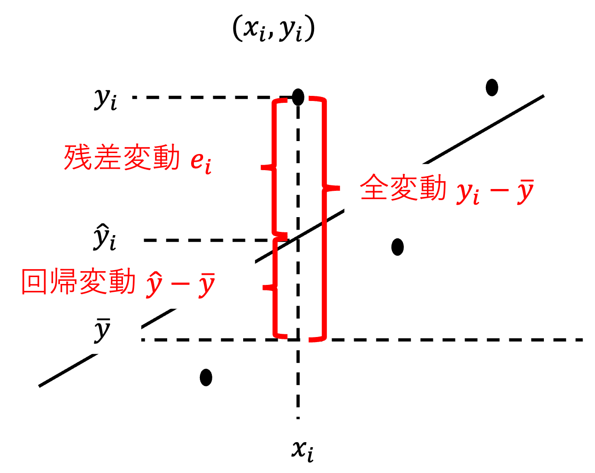
自由度調整済み決定係数（Adjusted \(R^2\)）
決定係数は説明変数の数が増えるにつれて大きくなり1に近づくという性質を持ちます。（説明する材料が増えるので説明力が大きくなる。）
そこで、「重回帰分析」では、説明変数が増えた分を考慮した自由度調整済決定係数を見るのが鉄則です。
通常の決定係数（(R^{2})）の弱点を補った、「本当に意味のある要因だけを評価した予測スコア」です。説明変数が複数ある場合に用いられます。
単回帰分析と重回帰分析
重回帰分析は複数の単回帰分析を同時に行なっているのではない。
重回帰分析の係数は、他の説明変数をコントロールしたときに説明変数が非説明変数に与える影響の大きさを示している。
多次元の空間の中にデータが散らばり、そのちょうど真ん中を通るように面を作るイメージ。
参考
まとめ
回帰分析（regression analysis）は、ある変数（説明変数 X）が 別の変数（被説明変数 Y）にどのような影響を与えるかを数式で表す分析手法です。
| 用語 | 別の呼び方 | 例 |
|---|---|---|
| 被説明変数（Y） | 目的変数・応答変数・従属変数 | 医療費・年収・住宅価格 |
| 説明変数（X） | 予測変数・独立変数・共変量 | 年齢・経験年数・面積 |
回帰分析の主な目的：
- 説明：X が Y に与える影響の大きさを定量化する
- 予測：X の値から Y の値を予測する
- 制御：Y を特定の値に近づけるために X をどう操作するか考える
Note
相関分析と回帰分析の違い
| 相関分析 | 回帰分析 | |
|---|---|---|
| 問い | X と Y は関係があるか？ | X が 1 増えると Y はどれだけ変わるか？ |
| 方向性 | 対称（X↔︎Y） | 非対称（X→Y） |
| 結果 | 相関係数 r（−1〜1） | 回帰係数（傾き）と切片 |
10.2 パッケージの準備
Note
今回使う結果表示パッケージの概要
| パッケージ | 主な関数 | 特徴 |
|---|---|---|
broom |
tidy(), glance() |
結果を整然データ（tibble）に変換 |
modelsummary |
modelsummary() |
複数モデルを並べて比較できる表 |
jtools |
summ() |
標準化係数や頑健標準誤差も表示可 |
stargazer |
stargazer() |
論文・レポート向けの美しい表 |
演習問題では、どのパッケージを使うか問題ごとに指定します。
10.3 データの準備
これから回帰分析の勉強をするために使うデータです。全てフォルダに入れてください。
医療保険費用データ（insurance.csv）
住宅価格データ（Housing.csv）
給与データ（Salary_Data.csv）
学生成績データ（Student_Performance.csv）
世界国情報（world-data-2023.csv）
まずは主に 医療保険費用データ（insurance.csv）を使います。
Rows: 1,338
Columns: 7
$ age <dbl> 19, 18, 28, 33, 32, 31, 46, 37, 37, 60, 25, 62, 23, 56, 27, 1…
$ sex <chr> "female", "male", "male", "male", "male", "female", "female",…
$ bmi <dbl> 27.900, 33.770, 33.000, 22.705, 28.880, 25.740, 33.440, 27.74…
$ children <dbl> 0, 1, 3, 0, 0, 0, 1, 3, 2, 0, 0, 0, 0, 0, 0, 1, 1, 0, 0, 0, 0…
$ smoker <chr> "yes", "no", "no", "no", "no", "no", "no", "no", "no", "no", …
$ region <chr> "southwest", "southeast", "southeast", "northwest", "northwes…
$ charges <dbl> 16884.924, 1725.552, 4449.462, 21984.471, 3866.855, 3756.622,…変数の説明
| 変数名 | 内容 | 型 |
|---|---|---|
age |
年齢（歳） | 数値 |
sex |
性別（male / female） |
カテゴリ |
bmi |
BMI（体格指数） | 数値 |
children |
扶養子供数 | 数値 |
smoker |
喫煙有無（yes / no） |
カテゴリ |
region |
居住地域（4地域） | カテゴリ |
charges |
医療保険費用（ドル）【被説明変数】 | 数値 |
また、住宅価格データ（Housing.csv）も補足的に使います。
Rows: 545
Columns: 13
$ price <dbl> 13300000, 12250000, 12250000, 12215000, 11410000, 108…
$ area <dbl> 7420, 8960, 9960, 7500, 7420, 7500, 8580, 16200, 8100…
$ bedrooms <dbl> 4, 4, 3, 4, 4, 3, 4, 5, 4, 3, 3, 4, 4, 4, 3, 4, 4, 3,…
$ bathrooms <dbl> 2, 4, 2, 2, 1, 3, 3, 3, 1, 2, 1, 3, 2, 2, 2, 1, 2, 2,…
$ stories <dbl> 3, 4, 2, 2, 2, 1, 4, 2, 2, 4, 2, 2, 2, 2, 2, 2, 2, 4,…
$ mainroad <chr> "yes", "yes", "yes", "yes", "yes", "yes", "yes", "yes…
$ guestroom <chr> "no", "no", "no", "no", "yes", "no", "no", "no", "yes…
$ basement <chr> "no", "no", "yes", "yes", "yes", "yes", "no", "no", "…
$ hotwaterheating <chr> "no", "no", "no", "no", "no", "no", "no", "no", "no",…
$ airconditioning <chr> "yes", "yes", "no", "yes", "yes", "yes", "yes", "no",…
$ parking <dbl> 2, 3, 2, 3, 2, 2, 2, 0, 2, 1, 2, 2, 1, 2, 0, 2, 1, 2,…
$ prefarea <chr> "yes", "no", "yes", "yes", "no", "yes", "yes", "no", …
$ furnishingstatus <chr> "furnished", "furnished", "semi-furnished", "furnishe…10.4 単回帰分析
単回帰モデルとは
単回帰分析（simple linear regression）は、説明変数が 1 つの回帰分析です。
\[Y = \beta_0 + \beta_1 X + \varepsilon\]
| 記号 | 名前 | 意味 |
|---|---|---|
| \(Y\) | 被説明変数 | 予測したい変数 |
| \(X\) | 説明変数 | 影響を与える変数 |
| \(\beta_0\) | 切片（intercept） | X = 0 のときの Y の予測値 |
| \(\beta_1\) | 回帰係数（coefficient） | X が 1 増えたときの Y の変化量 |
| \(\varepsilon\) | 誤差項 | モデルで説明できない部分 |
lm() 関数で回帰分析を実行する
R では lm() 関数（linear model）で回帰分析を実行します。
- 1
-
lm(被説明変数 ~ 説明変数, data = データ)という形式で書く
Call:
lm(formula = charges ~ age, data = df_ins)
Coefficients:
(Intercept) age
3165.9 257.7 結果の表示方法①：summary()
Call:
lm(formula = charges ~ age, data = df_ins)
Residuals:
Min 1Q Median 3Q Max
-8059 -6671 -5939 5440 47829
Coefficients:
Estimate Std. Error t value Pr(>|t|)
(Intercept) 3165.9 937.1 3.378 0.000751 ***
age 257.7 22.5 11.453 < 2e-16 ***
---
Signif. codes: 0 '***' 0.001 '**' 0.01 '*' 0.05 '.' 0.1 ' ' 1
Residual standard error: 11560 on 1336 degrees of freedom
Multiple R-squared: 0.08941, Adjusted R-squared: 0.08872
F-statistic: 131.2 on 1 and 1336 DF, p-value: < 2.2e-16
Note
summary() の出力の読み方
| 出力項目 | 意味 |
|---|---|
Estimate |
回帰係数の推定値（切片・傾き） |
Std. Error |
標準誤差（推定の不確かさ） |
t value |
t 値（係数 ÷ 標準誤差） |
Pr(>|t|) |
p 値（有意性の指標） |
Multiple R-squared |
決定係数 \(R^2\)（モデルの説明力、0〜1） |
Adjusted R-squared |
自由度調整済み \(R^2\) |
F-statistic |
F 値（モデル全体の有意性検定） |
有意性の星印（*）の意味：
| 記号 | p 値の範囲 | 意味 |
|---|---|---|
*** |
< 0.001 | 0.1% 水準で有意 |
** |
< 0.01 | 1% 水準で有意 |
* |
< 0.05 | 5% 水準で有意 |
. |
< 0.1 | 10% 水準で有意 |
| （なし） | ≥ 0.1 | 有意でない |
結果の表示方法②：broom::tidy() と glance()
# A tibble: 2 × 5
term estimate std.error statistic p.value
<chr> <dbl> <dbl> <dbl> <dbl>
1 (Intercept) 3166. 937. 3.38 7.51e- 4
2 age 258. 22.5 11.5 4.89e-29# A tibble: 1 × 12
r.squared adj.r.squared sigma statistic p.value df logLik AIC BIC
<dbl> <dbl> <dbl> <dbl> <dbl> <dbl> <dbl> <dbl> <dbl>
1 0.0894 0.0887 11560. 131. 4.89e-29 1 -14415. 28836. 28852.
# ℹ 3 more variables: deviance <dbl>, df.residual <int>, nobs <int>
Note
tidy() と glance() の使い分け
| 関数 | 出力 | 用途 |
|---|---|---|
tidy() |
係数ごとの統計量（1行＝1係数） | 係数の p 値・信頼区間の確認 |
glance() |
モデル全体の統計量（1行） | \(R^2\)・AIC・F 値などの確認 |
augment() |
予測値・残差を追加したデータ | 残差分析・可視化 |
結果の表示方法③：jtools::summ()
- 1
-
jtoolsのsumm()はsummary()より見やすい表で結果を表示する
MODEL INFO:
Observations: 1338
Dependent Variable: charges
Type: OLS linear regression
MODEL FIT:
F(1,1336) = 131.17, p = 0.00
R² = 0.09
Adj. R² = 0.09
Standard errors:OLS
----------------------------------------------------
Est. S.E. t val. p
----------------- --------- -------- -------- ------
(Intercept) 3165.89 937.15 3.38 0.00
age 257.72 22.50 11.45 0.00
----------------------------------------------------MODEL INFO:
Observations: 1338
Dependent Variable: charges
Type: OLS linear regression
MODEL FIT:
F(1,1336) = 131.17, p = 0.00
R² = 0.09
Adj. R² = 0.09
Standard errors:OLS
---------------------------------------------------------------
Est. 2.5% 97.5% t val. p
----------------- --------- --------- --------- -------- ------
(Intercept) 3165.89 1327.44 5004.33 3.38 0.00
age 257.72 213.58 301.87 11.45 0.00
---------------------------------------------------------------結果の表示方法④：modelsummary()
- 1
-
stars = TRUEで有意性の星印を表示 - 2
-
gof_mapで表示するモデル適合指標を選択
| (1) | |
|---|---|
| + p < 0.1, * p < 0.05, ** p < 0.01, *** p < 0.001 | |
| (Intercept) | 3165.885*** |
| (937.149) | |
| age | 257.723*** |
| (22.502) | |
| Num.Obs. | 1338 |
| R2 | 0.089 |
| R2 Adj. | 0.089 |
結果の表示方法⑤：stargazer()
| Dependent variable: | |
| 医療費（ドル） | |
| 年齢 | 257.72*** |
| (22.50) | |
| Constant | 3,165.89*** |
| (937.15) | |
| Observations | 1,338 |
| R2 | 0.09 |
| Adjusted R2 | 0.09 |
| Residual Std. Error | 11,560.31 (df = 1336) |
| F Statistic | 131.17*** (df = 1; 1336) |
| Note: | p<0.1; p<0.05; p<0.01 |
Note
stargazer() の type 引数
| 値 | 出力形式 | 用途 |
|---|---|---|
"html" |
HTML 表 | Quarto / R Markdown の HTML 出力 |
"latex" |
LaTeX コード | 論文（PDF）用 |
"text" |
テキスト表 | コンソール確認用 |
単回帰結果の可視化
ggplot(df_ins, aes(x = age, y = charges)) +
geom_point(alpha = 0.3, color = "steelblue") +
geom_smooth(method = "lm", se = TRUE, color = "red") +
annotate("text", x = 20, y = 60000,
label = paste0("charges = ",
round(coef(model1)[1], 0), " + ",
round(coef(model1)[2], 0), " × age"),
hjust = 0, color = "red", size = 4) +
labs(title = "年齢と医療費の関係",
x = "年齢（歳）",
y = "医療費（ドル）") +
theme_minimal()`geom_smooth()` using formula = 'y ~ x'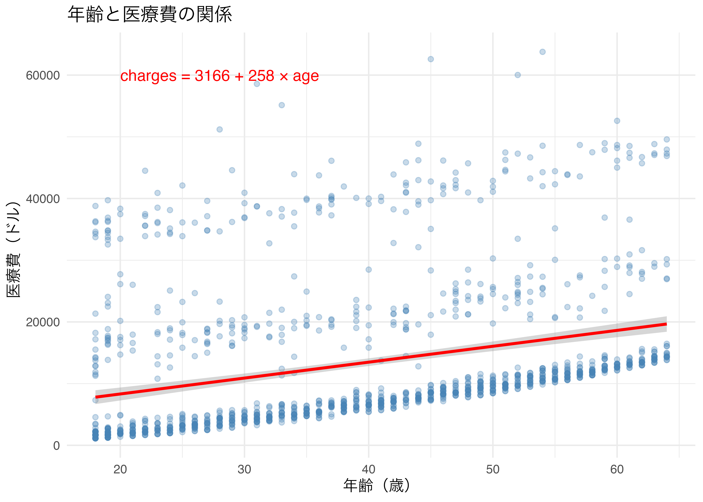
回帰係数の解釈
# A tibble: 2 × 5
term estimate std.error statistic p.value
<chr> <dbl> <dbl> <dbl> <dbl>
1 (Intercept) 3166. 937. 3.38 7.51e- 4
2 age 258. 22.5 11.5 4.89e-29解釈の例：
- 切片（Intercept）≈ 3,165：年齢が 0 歳のとき（現実的ではないが数式上）の予測医療費は約 3,165 ドル
- age の係数 ≈ 257：年齢が 1 歳増えるごとに、医療費が平均約 257 ドル増加する
決定係数 \(R^2\) の解釈：
# A tibble: 1 × 2
r.squared adj.r.squared
<dbl> <dbl>
1 0.0894 0.0887\(R^2 \approx 0.09\) は、年齢だけでは医療費の変動の約 9% しか説明できないことを意味します。
10.5 重回帰分析
重回帰モデルとは
重回帰分析（multiple linear regression）は、説明変数が 2 つ以上の回帰分析です。
\[Y = \beta_0 + \beta_1 X_1 + \beta_2 X_2 + \cdots + \beta_k X_k + \varepsilon\]
各 \(\beta_k\) は「他の説明変数を一定に保ったときの \(X_k\) の効果」（偏回帰係数）を表します。
重回帰の実行
- 1
-
+で説明変数を追加するだけで重回帰になる
Call:
lm(formula = charges ~ age + bmi, data = df_ins)
Residuals:
Min 1Q Median 3Q Max
-14457 -7045 -5136 7211 48022
Coefficients:
Estimate Std. Error t value Pr(>|t|)
(Intercept) -6424.80 1744.09 -3.684 0.000239 ***
age 241.93 22.30 10.850 < 2e-16 ***
bmi 332.97 51.37 6.481 1.28e-10 ***
---
Signif. codes: 0 '***' 0.001 '**' 0.01 '*' 0.05 '.' 0.1 ' ' 1
Residual standard error: 11390 on 1335 degrees of freedom
Multiple R-squared: 0.1172, Adjusted R-squared: 0.1159
F-statistic: 88.6 on 2 and 1335 DF, p-value: < 2.2e-16複数モデルの比較：modelsummary()
modelsummary() は複数モデルを横に並べて比較できるのが最大の強みです。
| 単回帰 | 年齢+BMI | 年齢+BMI+子供 | |
|---|---|---|---|
| + p < 0.1, * p < 0.05, ** p < 0.01, *** p < 0.001 | |||
| (Intercept) | 3165.885*** | -6424.805*** | -6916.243*** |
| (937.149) | (1744.091) | (1757.480) | |
| age | 257.723*** | 241.931*** | 239.994*** |
| (22.502) | (22.298) | (22.289) | |
| bmi | 332.965*** | 332.083*** | |
| (51.374) | (51.310) | ||
| children | 542.865* | ||
| (258.241) | |||
| Num.Obs. | 1338 | 1338 | 1338 |
| R2 | 0.089 | 0.117 | 0.120 |
| R2 Adj. | 0.089 | 0.116 | 0.118 |
複数モデルの比較：stargazer()
| Dependent variable: | |||
| 医療費（ドル） | |||
| 単回帰 | 年齢+BMI | 年齢+BMI+子供 | |
| (1) | (2) | (3) | |
| 年齢 | 257.72*** | 241.93*** | 239.99*** |
| (22.50) | (22.30) | (22.29) | |
| BMI | 332.97*** | 332.08*** | |
| (51.37) | (51.31) | ||
| 子供数 | 542.86** | ||
| (258.24) | |||
| Constant | 3,165.89*** | -6,424.80*** | -6,916.24*** |
| (937.15) | (1,744.09) | (1,757.48) | |
| Observations | 1,338 | 1,338 | 1,338 |
| R2 | 0.09 | 0.12 | 0.12 |
| Adjusted R2 | 0.09 | 0.12 | 0.12 |
| Residual Std. Error | 11,560.31 (df = 1336) | 11,386.88 (df = 1335) | 11,372.33 (df = 1334) |
| F Statistic | 131.17*** (df = 1; 1336) | 88.60*** (df = 2; 1335) | 60.69*** (df = 3; 1334) |
| Note: | p<0.1; p<0.05; p<0.01 | ||
住宅価格データを使った重回帰
# 面積 → 住宅価格（単回帰）
model_h1 <- lm(price ~ area, data = df_house)
# 面積 + 寝室数 + 浴室数 → 住宅価格（重回帰）
model_h2 <- lm(price ~ area + bedrooms + bathrooms, data = df_house)
# 面積 + 寝室数 + 浴室数 + 階数 + 駐車場 → 住宅価格
model_h3 <- lm(price ~ area + bedrooms + bathrooms + stories + parking,
data = df_house)
modelsummary(
list("単回帰" = model_h1, "重回帰1" = model_h2, "重回帰2" = model_h3),
stars = TRUE,
gof_map = c("nobs", "r.squared", "adj.r.squared"),
title = "住宅価格の回帰分析"
)| 単回帰 | 重回帰1 | 重回帰2 | |
|---|---|---|---|
| + p < 0.1, * p < 0.05, ** p < 0.01, *** p < 0.001 | |||
| (Intercept) | 2387308.482*** | -173171.608 | -145734.489 |
| (174497.798) | (264559.570) | (246634.481) | |
| area | 461.975*** | 378.763*** | 331.115*** |
| (31.226) | (27.155) | (26.600) | |
| bedrooms | 406820.034*** | 167809.788* | |
| (84457.883) | (82932.687) | ||
| bathrooms | 1386049.498*** | 1133740.163*** | |
| (124989.225) | (118828.331) | ||
| stories | 547939.810*** | ||
| (68894.469) | |||
| parking | 377596.289*** | ||
| (66804.138) | |||
| Num.Obs. | 545 | 545 | 545 |
| R2 | 0.287 | 0.487 | 0.562 |
| R2 Adj. | 0.286 | 0.484 | 0.558 |
augment() で予測値・残差を確認する
broom::augment() を使うと、元データに予測値・残差などを追加できます。
- 1
-
元データに
.fitted（予測値）・.resid（残差）・.hatなどを追加する
Rows: 1,338
Columns: 9
$ charges <dbl> 16884.924, 1725.552, 4449.462, 21984.471, 3866.855, 3756.62…
$ age <dbl> 19, 18, 28, 33, 32, 31, 46, 37, 37, 60, 25, 62, 23, 56, 27,…
$ bmi <dbl> 27.900, 33.770, 33.000, 22.705, 28.880, 25.740, 33.440, 27.…
$ .fitted <dbl> 7461.606, 9174.181, 11337.105, 9118.883, 10933.012, 9645.57…
$ .resid <dbl> 9423.318, -7448.628, -6887.643, 12865.587, -7066.157, -5888…
$ .hat <dbl> 0.0023608217, 0.0027956687, 0.0013907145, 0.0020889897, 0.0…
$ .sigma <dbl> 11388.22, 11389.32, 11389.59, 11385.69, 11389.51, 11390.01,…
$ .cooksd <dbl> 5.414931e-04, 4.009950e-04, 1.700815e-04, 8.926494e-04, 1.2…
$ .std.resid <dbl> 0.8285376, -0.6550574, -0.6052962, 1.1310423, -0.6208586, -…残差のチェック（残差 vs 予測値プロット）
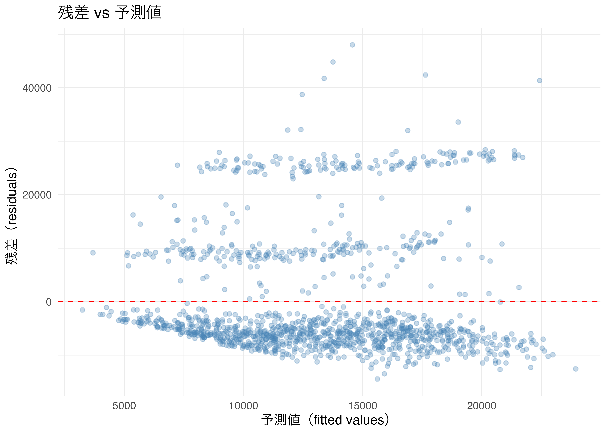
jtools::plot_summs() で係数を可視化する
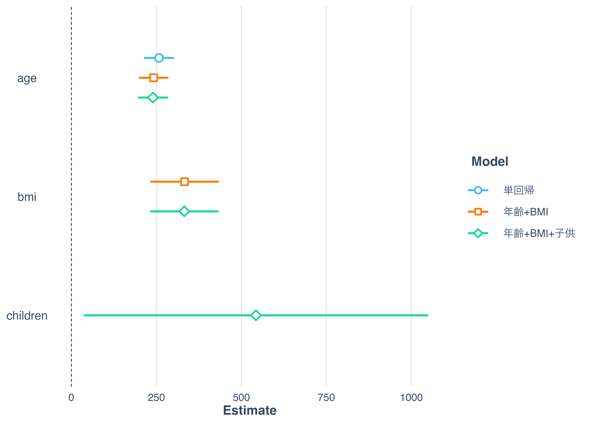
10.6 演習問題
Warning
Student_Performance.csv を使った単回帰
学習時間（HoursStudied）が成績（PerformanceIndex）に与える影響を 単回帰分析で分析してください。
手順のヒント：
① データを読み込む（read_csv）
② glimpse() でデータ構造を確認する
③ lm(PerformanceIndex ~ HoursStudied, data = ...) で単回帰を実行する
④ summary() で結果を確認する
⑤ tidy() と glance() で整然データとして確認する
⑥ 散布図 + 回帰直線（geom_smooth(method = "lm")）を描く- 回帰係数を解釈してください（学習時間が 1 時間増えると成績はどれだけ変わるか）
- 決定係数 \(R^2\) を確認し、モデルの説明力を評価してください
- 結果の表示には
summary()とtidy()を使ってください
Warning
Student_Performance.csv を使った重回帰
以下の3つのモデルを lm() で推定し、modelsummary() で比較してください。
- モデルA：
PerformanceIndex ~ HoursStudied - モデルB：
PerformanceIndex ~ HoursStudied + PreviousScores - モデルC：
PerformanceIndex ~ HoursStudied + PreviousScores + SleepHours + SamplePapers
手順のヒント：
① 3つのモデルをそれぞれ lm() で推定する
② list() で3モデルをまとめる
③ modelsummary() で比較表を作成する（stars = TRUE, gof_map を指定）
④ 各モデルの R² を比較し、説明変数を増やすと何が変わるか確認するmodelsummary()を使ってください- モデルBとモデルCの \(R^2\) を比較し、説明変数を追加した効果を考察してください
Warning
Salary_Data.csv を使った単回帰
経験年数（YearsExperience）が年収（Salary）に与える影響を 単回帰分析で分析してください。
手順のヒント：
① read_csv("Salary_Data.csv", locale = locale(encoding = "utf-8-sig")) で読み込む
② glimpse() でデータ構造を確認する
③ lm(Salary ~ YearsExperience, data = ...) で単回帰を実行する
（列名にスペースが含まれるためバッククォートで囲む）
④ summ() で結果を確認する（jtools パッケージ）
⑤ 散布図 + 回帰直線を描く- 結果の表示には
jtools::summ()を使ってください - 経験年数が 1 年増えると年収はいくら増えるか解釈してください
Warning
insurance.csv を使った重回帰と stargazer()
insurance.csv を使って以下の2モデルを推定し、 stargazer() で比較表を作成してください。
- モデルA：
charges ~ age - モデルB：
charges ~ age + bmi + children
手順のヒント：
① 2つのモデルを lm() で推定する
② stargazer(モデルA, モデルB, type = "html", ...) で表を作成する
③ covariate.labels でわかりやすい日本語ラベルを付ける
④ R² の変化を確認するチャンクオプションに #| results: asis を追加することを忘れないでください。
Warning
今回はやらなくていいいです。
augment() を使った残差分析
問題 2 のモデル C（Student_Performance.csv の4変数モデル）について、 augment() で予測値と残差を取得し、残差プロットを描いてください。
手順のヒント：
① 問題2のモデルC を augment() に渡す
② ggplot で aes(x = .fitted, y = .resid) の散布図を描く
③ geom_hline(yintercept = 0) で水平線を追加する
④ 残差にパターンがないか（ランダムに散らばっているか）確認する- 残差プロットを見て、線形モデルの仮定が成立しているかコメントしてください
10.7 まとめ
本日学んだこと
回帰分析の基本的な流れ
# ① モデルの推定
model <- lm(Y ~ X1 + X2, data = df)
# ② 結果の確認
summary(model) # 基本
model |> tidy() # 係数の整然データ（broom）
model |> glance() # モデル全体の統計量（broom）
summ(model) # 見やすい表（jtools）
# ③ 複数モデルの比較
modelsummary(list(m1, m2, m3), stars = TRUE) # modelsummary
stargazer(m1, m2, m3, type = "html") # stargazer
# ④ 残差分析
model |> augment() # 予測値・残差を追加（broom）
plot_summs(m1, m2) # 係数の可視化（jtools）各パッケージの使い分け
| パッケージ | 関数 | 向いている場面 |
|---|---|---|
broom |
tidy(), glance(), augment() |
データ処理・後続の可視化 |
jtools |
summ(), plot_summs() |
授業・探索的分析 |
modelsummary |
modelsummary() |
複数モデルの比較 |
stargazer |
stargazer() |
論文・レポート提出 |
Note
次回の予告
第 11 回では、ダミー変数を用いた回帰分析を学習します。
- 「喫煙者か否か」「性別」などのカテゴリ変数を回帰分析に組み込む方法
- R が自動的にダミー変数を作る仕組み（参照カテゴリ）
- ダミー変数の係数の解釈